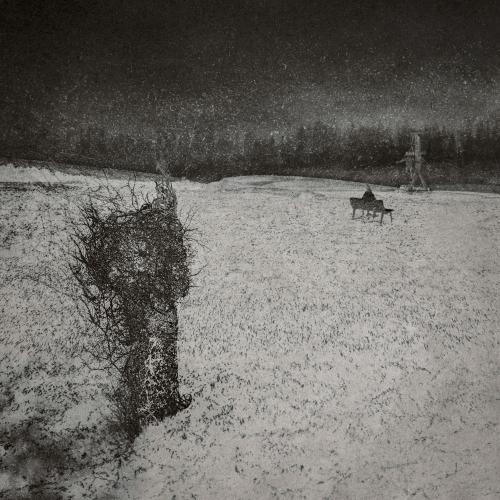

artic.
About
Projects
artic.le
Quarterly
Contact

arkyteccc
deus ex machina
LP • 2024.04.26
Play
01
from corners to switch
Ready
0:00
2:26
Prev
Next
Available On
Spotify
Play
Apple Music
Play
YouTube Music
Play
Tidal
Play
Amazon Music
Play
Melon
Play
Genie
Play
Bugs
Play
Film
Concept Board
arkyteccc, deus ex machina
Documentary
Production Documentary Pt. 1
Documentary
Production Documentary Pt. 2
Visualizer
Official Visualizer
Listening Party
deus ex machina
CODA
deus ex machina
Print
Lyrics
Lyric Booklet
Interview
1MC1PD : The Interview
×